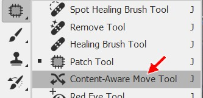
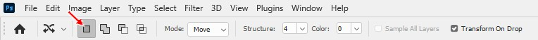
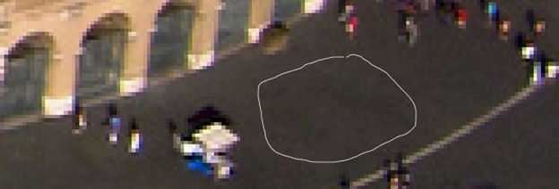
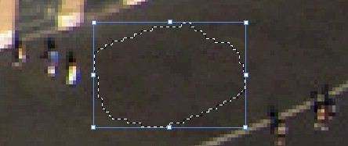
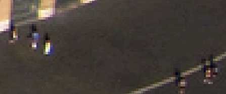

|
Introduction |
Method 1: Brush/Pencil | Method
2: Spot Healing Brush | Method 3: Healing Brush | Method
4:
Patch | Method 5: Content-Aware Move |
| Method 5: Content-Aware Move Tool |
The Content-Aware Move Tool works opposite from the Patch Tool. With this tool, we draw a selection area and then click that area and move it to a spot in the image where we want to relocate it. Photoshop fills the original spot by looking at the surrounding pixels. Let's get some practice.





The Content-Aware Move Tool is very useful for removing people and objects that are very close to items we want to keep like buildings and trees. Since we control the shape, we can make selections of any size and use those to replace anything we don't want in the image. Once again, keep in mind that Photoshop is not simply replacing the area you drag the selection over. Instead, it is blending the two areas together, so be careful what area you choose to move and what areas you choose to replace. If the areas are vastly different in color, tone, tint, etc, you will get all kinds of strange results.
|
I want to take a quick second here to point out something very important. As I mentioned back in the Introduction in the brief descriptions of each removal method, the Content-Aware Move Tool is generally used to move objects within an image. For example, instead of getting rid of the kiosk that we removed in this step, I could instead use the Content-Aware Move Tool to relocated the kiosk to a different part of the image. Photoshop would then fill the area that the kiosk originally occupied with concrete so that it would be impossible to tell where it originally came from. As you can see from this step, the tool is just as capable at removing objects as it is in moving them. If you are working with images in the future and you need to move things around, keep in mind that the Content-Aware Move Tool is an effective tool to pull this off. |
Let's save our work up to this point.
In the next step, we will move away from individual tools and use a method that, while similar to the tool used in this Step, gives Photoshop a little more power to adjust our image.